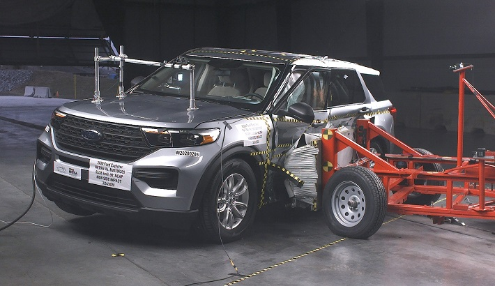

Introduction
A new vehicle arrives with a safety score printed on its window sticker. That number is earned in a laboratory, in a controlled collision that lasts a fraction of a second. The years of driving that follow are not controlled at all.
The automobile is the most dangerous machine most people operate, and it is operated daily, casually, and usually without incident. Tens of thousands of people die on American roads every year, and many times that number are injured seriously enough to require hospital care. That toll is not distributed evenly: it falls hardest on younger drivers, on rural roads, on people travelling at night, and on those in older vehicles that never carried modern protective equipment. Over the past six decades the response to this toll has been steady regulatory pressure, and it has worked. Seat belts, crumple zones, airbags, anti-lock braking, and electronic stability control each moved from optional novelty to legal requirement, and each one measurably reduced the chance of dying in a collision. Government crash testing sits at the centre of that history, because a public score creates commercial pressure that regulation alone cannot. Manufacturers compete on safety ratings in their advertising, which means the rating itself has become a safety intervention. The question that follows is how completely a laboratory score can describe the safety of a machine that will be driven for fifteen years. A crash test measures what happens during an impact. It does not measure what happens in the long, uneventful period before one.

Safety is communicated to buyers as a small number of stars, and that simplicity is deliberate. A shopper comparing vehicles in a showroom cannot be expected to read engineering reports, so a five-point scale compresses an enormous amount of testing into something glanceable. The tests behind the score are rigorous and repeatable: vehicles are driven into barriers at prescribed speeds, struck from the side by weighted sleds, and assessed for their tendency to roll over during sharp manoeuvres. Sensors inside crash dummies measure the loads reaching a head, a neck, a chest, and a femur, and those measurements become the rating. What the rating describes, precisely, is how well a vehicle protects a correctly belted adult during one specific kind of severe, sudden event. It is silent on everything else. It says nothing about whether a fuel pump will fail on a motorway three years later, whether a reversing camera will go dark, whether a battery pack will ignite in a car park, or whether a steering component will develop play at eighty thousand miles. Those failures are not collisions, but they are unmistakably safety events, and some of them cause collisions. A vehicle can therefore hold the highest possible laboratory score and still accumulate a long record of dangerous faults in ordinary service.
There is a second, much messier record of how vehicles behave, and it is written by the people who own them. When something goes wrong, an owner can file a complaint with the federal safety regulator describing what happened, what part failed, and whether anyone was hurt. These accounts arrive in their own words, unevenly, sometimes within hours of an incident and sometimes years afterwards. Individually they are anecdotes. Collected across hundreds of thousands of vehicles they become an early-warning system, because a cluster of similar complaints about the same component in the same model is how a systematic defect first becomes visible. Regulators watch for those clusters, open formal investigations into the ones that look real, and can compel a manufacturer to issue a recall. That chain — complaint, investigation, recall — is slow, adversarial, and public, and it is the mechanism by which a fault affecting one owner eventually protects every other owner of that vehicle. It also produces a record that is fundamentally different in character from a crash test: retrospective rather than predictive, voluntary rather than standardised, and driven by whatever owners happened to notice and bother to report.
These two records describe the same vehicles and almost never meet. One is generated before a car is sold, under laboratory conditions, and is used to market it. The other accumulates afterwards, in driveways and repair shops, and surfaces mainly when something has already gone wrong. Placing them side by side raises a question with real consequences for anyone choosing a car: does a strong crash-test score predict a quiet ownership experience, or are these two dimensions of safety largely independent of one another? The question is growing more urgent rather than less. Vehicles are absorbing driver-assistance systems that brake, steer, and warn on the driver's behalf, and electrification is replacing familiar mechanical failures with unfamiliar electrical and thermal ones. Both shifts change what can break and how dangerous the breakage is, and neither is captured by a barrier impact. Understanding where the laboratory score and the ownership record agree, where they diverge, and which kinds of vehicles sit in the gap between them would help buyers read a window sticker more accurately, and would help regulators decide where to look next.
Ten questions this project sets out to answer
- Does a higher crash-test star rating correspond to fewer safety complaints once a vehicle is on the road?
- Which vehicle systems generate the most owner complaints, and which generate the most dangerous complaints?
- Are some vehicle segments — trucks, sport-utility vehicles, sedans, minivans — systematically more prone to fire, crash, or injury reports than others?
- How does estimated rollover probability relate to a vehicle's overall safety score, and does it predict real-world harm?
- Do electrified vehicles fail differently from petrol vehicles, and are their failures more or less harmful when they occur?
- How long after an incident do owners actually report it, and does that delay differ by how serious the incident was?
- At what point in a vehicle's life do safety problems tend to emerge?
- Do complaints reliably precede recalls, and how much warning does the complaint record give before formal action is taken?
- Can vehicles be grouped into meaningful safety profiles using their combined testing and ownership records, rather than by manufacturer or body style?
- Which measurable characteristics best predict whether a reported problem will involve a crash, a fire, or an injury?